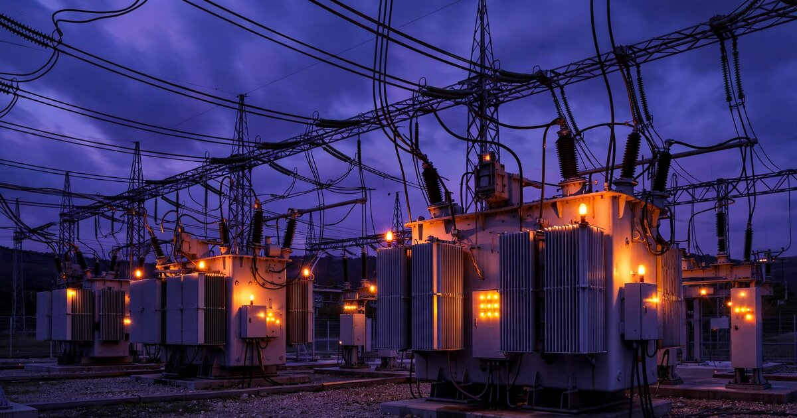

Transformer Fleet Health Intelligence SaaS for Public Utilities and Co-ops
The average large power transformer in the United States is 38 years old. Seventy percent have passed the quarter-century mark. When one of these 200-ton, $5 million assets fails without warning, the replacement order goes to the back of a queue that now stretches three to five years, and the utility scrambles to rent a mobile substation at $40,000 a month while 15,000 customers wonder why the lights flicker every afternoon. Dissolved gas analysis of transformer oil has been the diagnostic gold standard for decades, but 2,900 public power utilities and rural electric cooperatives still manage those results in Excel spreadsheets, PDF lab reports, and filing cabinets. The analytical layer that turns periodic oil samples into fleet-wide failure predictions and capital planning intelligence does not exist for the segment of the industry least able to absorb a surprise $8 million replacement bill.

The Problem
The United States operates approximately 25,000 to 30,000 large power transformers in its transmission fleet, according to IndexBox's 2026 market analysis. These are not the green canisters on telephone poles; they are building-sized machines that weigh 100 to 400 tons, cost $3 million to $10 million apiece, and step voltage from 345 kV down to the distribution level that feeds neighborhoods and factories. The U.S. Department of Energy's Large Power Transformer Study found that the average age of installed LPTs is 38 to 40 years, with 70 percent being 25 years or older. These machines were designed for a 40-year service life. America is running on borrowed time.
The replacement pipeline cannot keep up. Reuters reported in July 2026 that lead times for high-voltage transformers have stretched to multiple years, up from roughly one year in 2020 and 2021, driven by the collision of aging infrastructure replacement, renewable energy interconnection, and the explosive growth of AI data center demand. BloombergNEF projects that data centers will consume 20 percent of U.S. electricity by 2035, up from 5.9 percent today. Every new gigawatt of data center capacity requires substation transformers that compete for the same constrained manufacturing slots as the replacement units that aging utilities desperately need.
The result is a triage problem. Utilities that own 15 or 50 or 200 transformers of varying age, condition, and criticality need to decide which units to monitor intensively, which to schedule for proactive replacement, and which to run until failure. The diagnostic tool for making this decision has existed since the 1970s: dissolved gas analysis. When transformer insulation degrades or arcing occurs internally, the oil absorbs characteristic gases (hydrogen, methane, ethylene, acetylene, and others) in patterns that indicate specific fault types. A single DGA lab test costs $75 to $200. An online DGA monitor that samples continuously costs $15,000 to $60,000 per unit, depending on gas coverage. The physics is well understood. The IEEE and IEC have published standardized diagnostic ratios (Duval Triangle, Rogers Ratios, Key Gas Method) that any electrical engineer can apply.
Yet for the public power segment, the intelligence layer that sits between the raw DGA data and the capital planning decision is almost entirely absent. A transformer engineer at a municipal utility in Kansas or a cooperative in rural Georgia receives a PDF from a contract lab four times a year, opens a spreadsheet, types in the numbers, squints at a trend line, and makes a judgment call. There is no automated anomaly detection across the fleet. There is no benchmarking against anonymized industry peers. There is no remaining-useful-life model that integrates loading history, ambient temperature, DGA trajectory, and maintenance records into a probability-weighted failure forecast. The large investor-owned utilities (Duke, AEP, Southern Company) have built or bought asset health management platforms. Everybody else is flying blind on the most expensive, least replaceable equipment they own.
Market Size
Addressable segment: The American Public Power Association represents more than 2,000 community-owned utilities serving 54 million people. The National Rural Electric Cooperative Association represents nearly 900 cooperatives (832 distribution, 64 G&T) serving 42 million people across 56 percent of the nation's landmass. Together, these 2,900+ entities account for roughly 26 percent of U.S. electricity sales. They collectively own and operate an estimated 6,000 to 9,000 large power transformers (substation and transmission class) and hundreds of thousands of distribution transformers, based on their proportional share of the national fleet and DOE capacity data.
The addressable market for a fleet health intelligence SaaS is the subset with enough transformer assets to justify subscription pricing. Utilities with 10 or more substation-class transformers represent the primary target: approximately 800 public power utilities (APPA data shows that the top 200 account for 65 percent of public power sales, with several hundred more in the mid-tier) and 300 cooperatives (the 64 G&T cooperatives plus the larger distribution co-ops). That gives an initial addressable base of roughly 1,100 entities.
At $1,200/month for a Standard tier (DGA data management, automated diagnostics, fleet risk dashboard) and $2,800/month for a Premium tier (predictive failure modeling, capital planning optimization, benchmarking), with a projected 60/40 split, the blended ARPU is $1,840/month. At 1,100 addressable utilities, the SaaS TAM is $24.3 million in annual recurring revenue. Add a transactional layer for DGA lab test brokering and sample logistics coordination (connecting utilities with certified labs and managing chain of custody), taking a $25 fee per test on an estimated 180,000 annual tests across the addressable segment, and the total TAM reaches $28.8 million.
The Product
A cloud-based transformer fleet health intelligence platform that ingests DGA results from any source (lab reports, online monitors, SCADA historians), normalizes the data, and produces fleet-wide risk rankings, failure predictions, and capital planning recommendations. Four core modules:
- DGA Data Hub: Automated ingestion of lab reports (PDF parsing, CSV import, API integration with major contract labs like SDMyers, Weidmann, and Doble), plus direct integration with online DGA monitors from Serveron/Qualitrol, ABB, GE Vernova, and Dynamic Ratings. Normalizes gas concentrations, flags data quality issues (contaminated samples, measurement inconsistencies across labs), and maintains a complete historical DGA record per transformer. Eliminates the spreadsheet. Sounds simple, but for a utility that has used three different labs over 20 years and has gas values recorded in five different units across eight different file formats, this is a real problem that nobody has solved for them in a way that requires zero IT staff
- Automated Diagnostic Engine: Applies IEEE C57.104-2019 gas interpretation guidelines, Duval Triangle (including Triangles 4 and 5 for stray gassing and low-energy faults), Rogers Ratios, and Key Gas Method automatically to every new data point. Color-coded fleet dashboard surfaces transformers requiring immediate attention. Rate-of-change alerting catches accelerating degradation before the next scheduled lab test. Cross-correlates DGA trends with loading data (where SCADA integration exists) and ambient temperature to distinguish thermal overloading from internal faults. This is not novel diagnostics; it is the systematic application of well-established standards that most small utilities apply manually, inconsistently, and often months after the lab report arrives
- Remaining Useful Life (RUL) Estimator: Machine learning model trained on anonymized DGA histories, failure records, and asset metadata contributed by participating utilities (with data contribution incentivized through reduced subscription pricing). Outputs a probability distribution of remaining life for each transformer, updated with every new DGA result. The training data is the moat: every utility that contributes historical DGA and failure data makes the model more accurate for all participants, creating a network effect that a hardware vendor's proprietary model, trained only on its own monitors' data, cannot replicate. Initial model trained on published failure datasets (IEEE reliability studies, CIGRE TB 761) and augmented as customer data accumulates
- Capital Planning Optimizer: Takes the RUL estimates, current replacement costs (including lead time-adjusted procurement costs that account for the 3-5 year order queue), criticality rankings (based on load served, available redundancy, and N-1 contingency analysis), and budget constraints, and produces a 10-year transformer replacement schedule that minimizes total cost of ownership. Answers the question that keeps utility planners awake: "I have $4 million this year and 12 transformers older than 35 years. Which three should I replace, which five should I monitor online, and which four can wait?" This module is where the subscription pays for itself. A single deferred replacement that allows a critical transformer to run two additional years (instead of replacing it prematurely at $5 million) saves the subscription cost for a decade
Unit Economics
| Metric | Value |
|---|---|
| Monthly subscription (Standard: DGA management + automated diagnostics) | $1,200/utility |
| Monthly subscription (Premium: RUL modeling + capital planning) | $2,800/utility |
| Blended ARPU (60/40 Standard/Premium) | $1,840/month |
| Infrastructure cost per subscriber/month (cloud, ML compute) | $85 |
| Lab integration & data ops cost per subscriber/month | $45 |
| Customer acquisition cost | $8,500 |
| Expected LTV (36-month avg retention, 93% gross margin) | $61,516 |
| LTV:CAC ratio | 7.2:1 |
| Gross margin | 93% |
| Startup cost (18-month runway) | $3.4M |
| Break-even | 22 months |
Methodology note: The 36-month average retention assumption reflects the embedded workflow dynamic: once a utility's DGA records, diagnostic history, and capital plan live in the platform, switching costs are high and the annual subscription ($14,400-$33,600) is trivial relative to the asset values under management ($50 million to $500 million in transformer fleet replacement value for the target segment). CAC of $8,500 reflects the conference-heavy, relationship-driven sales cycle in public power (APPA's National Conference, NRECA's PowerXchange, regional conferences) combined with pilot-to-paid conversion. Gross margin of 93% reflects SaaS economics where the primary variable cost is cloud infrastructure, lab API integrations, and a small data operations team for ingestion normalization. LTV: $1,840 × 36 × 0.93 = $61,516. Payback: 4.6 months after activation.
Go-to-Market
Phase 1 (months 1-9): Recruit 30 pilot utilities from three high-density public power regions: the Nebraska public power district system (the entire state is served by public power, with over 160 entities), the Pacific Northwest (BPA preference customers, including dozens of municipal utilities and PUDs), and the Southeast cooperative belt (large G&T cooperatives like Oglethorpe Power, PowerSouth, and Associated Electric). Offer a free 12-month Standard tier in exchange for contributing historical DGA data (minimum 5 years) to seed the RUL model's training dataset. Target utilities that have experienced at least one unplanned transformer failure in the last decade, because they have both the pain and the data. Distribution through APPA's Demonstration of Energy & Efficiency Developments (DEED) program, which funds technology pilots for public power, and NRECA's Cooperative Research Network (CRN), which provides matching funds for member co-ops evaluating new technology.
Phase 2 (months 10-18): Monetize the Standard tier at $1,200/month. Launch the Premium tier with the RUL estimator trained on Phase 1 data. Expand through state and regional associations: the Minnesota Municipal Utilities Association (132 members), the Texas Public Power Association (72 members), the Florida Municipal Electric Association (33 members). These associations hold annual engineering conferences where a single presentation to 50 utility planners can generate 10-15 qualified leads. Integrate with the three largest contract DGA labs (SDMyers, Doble, Weidmann) so that lab reports flow directly into the platform without manual upload, eliminating the highest-friction step in adoption.
Phase 3 (months 19-30): Launch the Capital Planning Optimizer as a Premium add-on. Open the anonymized benchmarking module that lets utilities compare their fleet age, DGA profiles, and replacement rates against regional and national cohorts. Approach the 64 G&T cooperatives as enterprise accounts: a G&T that supplies power to 15-30 distribution co-ops can drive adoption across its member base. Enterprise pricing at $5,000/month covers the G&T's own fleet plus a benchmarking overlay for member distribution transformers. Begin international expansion with Canadian public power systems (Hydro One, BC Hydro, SaskPower), which face identical aging fleet dynamics with even longer procurement lead times due to customs and Buy-Canada provisions.
Competitive Landscape
| Company | What It Does | Fleet Analytics? | Public Power Focus? |
|---|---|---|---|
| Qualitrol/Serveron | Online DGA monitors (TM1, TM3, TM8) with TM View visualization software | Basic: trending for monitors they sell, not fleet-wide | No: sells to all utility types, no segment-specific product |
| ABB / Hitachi Energy | Online DGA monitors (CoreSense) plus Lumada APM for asset management | Yes, but enterprise-scale: Lumada APM is a $500K+ deployment for large IOUs | No: priced and scoped for utilities with $50M+ IT budgets |
| GE Vernova | Kelman DGA monitors plus APM Health analytics platform | Yes, same issue: enterprise pricing, requires GE ecosystem buy-in | No: minimum viable deployment is $200K+ with professional services |
| Dynamic Ratings | Online transformer monitoring (DGA, load, temperature) with analytics | Moderate: better analytics than Qualitrol, still hardware-centric | Some: smaller deployments, but analytics tied to their monitors only |
| Doble Engineering | Field test equipment, contract lab services, dobleARMS software | Historical: dobleARMS was pioneering but aging, desktop-based, not cloud-native | Partial: strong APPA presence, but dobleARMS hasn't been modernized |
| SDMyers | Contract DGA lab, oil analysis, consulting | Lab reports with recommendations, no persistent analytics platform | Yes, but service model, not SaaS: every analysis is a new billable engagement |
| This startup | Monitor-agnostic fleet health intelligence, lab-to-capital-plan SaaS | Core product: ingests all sources, fleet-wide RUL and capital planning | Yes: purpose-built for 2,900+ public utilities and cooperatives |
The structural gap mirrors what happened in healthcare diagnostics. Large hospital systems (the IOUs of healthcare) have Epic and Cerner platforms that aggregate lab results, apply clinical decision support rules, and produce population health analytics. Small clinics and rural hospitals (the munis and co-ops of healthcare) used to manage lab results in paper charts and standalone PDFs until cloud-native platforms like athenahealth built purpose-built EHRs that aggregated the same data at a price point and complexity level appropriate for 5-physician practices. The transformer health market has its Epics (ABB Lumada, GE APM Health). It does not have its athenahealth. Every existing competitor either sells hardware and treats analytics as an afterthought, or sells enterprise analytics platforms that require six-figure implementations and dedicated IT teams that a 50-person municipal utility does not have.
Why Now
Four forces are converging to make this problem urgent rather than chronic.
First, the transformer shortage has moved from an industry talking point to a grid reliability emergency. The U.S. utility-scale high-voltage transformer market grew from $3.8 to $4.2 billion in 2026 and is forecast to reach $7.5 to $9.0 billion by 2035 (IndexBox). Annual replacement procurement is rising from 800-1,000 units in 2026 to a projected 1,400-1,800 units by 2035 as the aging fleet reaches the replacement cliff simultaneously with data center and renewable interconnection demand. When you cannot get a replacement transformer for three to five years at any price, extending the life of your existing fleet by two or three years through early fault detection is not a nice-to-have; it is the only option.
Second, data center power demand is squeezing public power systems that never planned for it. Data centers currently consume 5.9 percent of U.S. electricity. BNEF forecasts 194 gigawatts of data center demand by 2035, an 83 percent increase over their December forecast. This is not just a problem for Virginia and Texas. Small utilities across the Midwest and Southeast are fielding inquiries from data center developers who want 50 MW to 200 MW connections. A cooperative in rural Ohio that has operated 150 MW of peak load for 30 years is suddenly being asked to double its capacity, and every expansion path runs through existing substation transformers that may or may not survive increased loading. Knowing which transformers can handle the stress and which are already degrading is the gatekeeping question for data center interconnection, and the answer lives in DGA data that nobody is systematically analyzing.
Third, the IEEE C57.104-2019 revision (the authoritative standard for DGA interpretation) significantly updated gas concentration thresholds and diagnostic ratios for the first time since 2008. Utilities that previously considered a transformer "healthy" under the old thresholds may need to reclassify it under the new standard. This creates a natural adoption moment: utilities need to re-evaluate their entire fleet against updated criteria, and doing that manually in spreadsheets for 40 or 100 transformers is a project that takes months. A platform that applies the new standard automatically across the fleet, and flags every unit whose status changed, sells itself to the utility's standards compliance officer.
Fourth, federal funding is lowering the acquisition barrier. The Bipartisan Infrastructure Law (IIJA) allocated $2.5 billion for grid resilience and innovation grants through DOE's Grid Resilience and Innovation Partnerships (GRIP) program. NRECA's Cooperative Research Network provides matching funds for member co-ops evaluating new technology. APPA's DEED program funds technology pilots for public power utilities. These programs can cover 50 to 80 percent of first-year subscription costs, effectively making the platform free for early adopters and giving the startup a subsidized go-to-market channel that private-sector SaaS companies rarely enjoy.
Original Contribution: The Replacement-Queue-Adjusted Risk Premium
A calculation we have not seen published elsewhere: Traditional transformer risk assessment uses a single metric: the probability of failure within a given time horizon, derived from DGA trend analysis and age. But probability of failure alone does not capture the economic consequence in a market with multi-year replacement lead times. A transformer with a 15 percent probability of failure in the next 24 months is a manageable risk when a replacement can be delivered in 12 months. That same 15 percent probability becomes existential when the replacement queue is 42 months, because the expected exposure window (the time between failure and replacement delivery) stretches from zero to 18 months of operating without the asset.
We define the Replacement-Queue-Adjusted Risk Premium (RQARP) as the expected unserved-energy cost created by the gap between probable failure timing and replacement delivery timing. For a 60 MVA transformer serving a 45 MW peak load with no installed spare or mobile substation capability, an 18-month exposure window at an unserved energy value of $10,000/MWh (a standard planning value used by MISO and PJM) produces an expected cost of: 0.15 probability × 18 months × 45 MW × 200 peak hours/month × $10,000/MWh = $24.3 million in risk-adjusted expected cost. Against that, a $33,600 annual Premium subscription that provides 6-12 months of advance warning (enough to enter the replacement queue before failure) represents a risk reduction investment with a 723:1 return.
Even adjusting for the reality that most utilities have some contingency capability (load transfer, mobile substations, curtailment), the ratio remains extreme. If we assume the utility can serve 70 percent of load through contingency measures, the residual unserved-energy exposure drops to $7.3 million, still a 217:1 return on the subscription cost. The point is not the precise number; it is that the economic justification for fleet-level DGA analytics has fundamentally changed in a world where you cannot buy a replacement transformer on a 12-month timeline. The risk premium scales with the replacement queue, and the queue has never been longer.
Limitations
This analysis has blind spots that need stating plainly.
First, the "2,900+ public utilities and cooperatives" figure overstates the addressable market for a transformer health SaaS. Many of these entities are tiny: APPA's membership includes municipal utilities that serve fewer than 1,000 customers, own one or two substation transformers, and have a total annual budget under $5 million. For these utilities, a $14,400/year SaaS subscription is a meaningful budget line, and the transformer monitoring "workflow" is a single engineer who visually inspects the unit quarterly and sends an oil sample once a year. The realistic addressable base is probably closer to 600-800 utilities with enough transformer assets and budget to justify the platform, not 1,100.
Second, the RUL model's accuracy depends entirely on the quality and breadth of training data. Published failure datasets (IEEE, CIGRE) are small, often fewer than 200 documented failures, and heavily biased toward European and Japanese utilities whose operating conditions, loading patterns, and maintenance practices differ from American public power. Building a proprietary dataset from customer contributions requires a critical mass of utilities willing to share sensitive asset data, including failure records that they may consider embarrassing or legally sensitive (particularly if a failure caused a fire, environmental contamination, or customer injury). Data-sharing reluctance is a real barrier, not a hypothetical one.
Third, the DGA diagnostic framework itself has known limitations. Dissolved gas analysis detects faults that produce gas: thermal degradation, arcing, partial discharge, and cellulose decomposition. It does not detect all failure modes. Bushing failures (which account for roughly 16 percent of transformer forced outages, per a CIGRE survey), tap changer malfunctions, and external short-circuit damage leave minimal DGA signatures. A utility that relies exclusively on DGA analytics for failure prediction will miss roughly one in five transformer failures, and the ones it misses tend to be sudden and catastrophic rather than gradual and predictable.
Fourth, the competitive moat may be thinner than described. Doble Engineering has 70 years of relationships with every utility in the APPA and NRECA membership base, a contract lab that processes hundreds of thousands of DGA samples annually, and the dobleARMS software platform that, while aging, already holds historical DGA data for thousands of transformers. If Doble decided to modernize dobleARMS into a cloud-native platform with ML-driven analytics, they could replicate this startup's entire product with a 12-month development effort and an existing customer base. The startup's hypothesis is that Doble, as a Danaher subsidiary focused on high-margin test equipment, will not prioritize a low-ARPU SaaS product for small utilities. That bet could be wrong.
Strongest Counterargument
The most compelling case against this startup is that the utilities it targets may be rationally choosing spreadsheets, and that their choice reflects a cost-benefit analysis that sophisticated analytics cannot improve.
Consider the economics from the perspective of a 50,000-customer cooperative in rural Alabama that owns 28 substation transformers averaging 32 years old. The co-op sends oil samples to a contract lab four times a year at $150 per sample. Total annual DGA cost: $16,800. The lab report includes a one-page interpretation with color-coded status (Normal, Caution, Warning, Critical) and a brief narrative. The co-op's single transformer engineer reads these reports, knows every unit by history and idiosyncrasy (Unit 7 has always run hot because it's next to the asphalt parking lot; Unit 14's hydrogen reads high because the nitrogen blanket has a slow leak), and makes informed decisions that a statistical model, lacking that contextual knowledge, would get wrong.
The co-op's actual risk exposure from transformer failure is also lower than the RQARP model suggests. Most cooperatives belong to a G&T cooperative or a statewide mutual aid network that maintains a shared inventory of mobile substations and portable transformers. When Oglethorpe Power's member co-op in south Georgia lost a 25 MVA transformer in 2024, a mobile unit was deployed from the shared pool within 72 hours and served load at reduced capacity for 14 months while the replacement was manufactured. The cost was real (roughly $600,000 in rental and transportation), but not the $7-24 million catastrophe that the unserved-energy calculation implies.
The counterargument, stated plainly: for many small utilities, the combination of experienced engineers with institutional knowledge, quarterly lab reports, and mutual aid networks already provides a level of risk management that is adequate for their scale. Adding a $14,400/year analytics platform might produce marginally better failure predictions, but the marginal improvement may not justify the cost for an organization whose entire IT budget is $200,000 and whose board of directors evaluates technology purchases against rate impact on residential customers paying $0.11/kWh. The market for sophisticated analytics exists, but it may be at the G&T cooperative and large municipal utility level (the top 200-300 entities), not the broad public power base of 2,900.
The Bottom Line
America's power grid runs on transformers that are, on average, two years past their design life. The replacement queue has never been longer. Data centers are about to double the load on equipment that was installed when Jimmy Carter was president. Dissolved gas analysis has been the diagnostic gold standard for five decades, and yet the analytical layer that turns periodic oil tests into fleet-wide failure predictions and capital planning intelligence is available only to the largest investor-owned utilities. Twenty-nine hundred public power utilities and cooperatives, collectively responsible for keeping the lights on for 96 million Americans, manage this data in spreadsheets. The cold-start data problem is real, Doble could wake up and compete, and many small utilities may rationally prefer their current approach. But with transformer lead times at 3-5 years and replacement costs at $3-10 million, the cost of a missed DGA signal has never been higher, and the analytical tools to catch it have never been cheaper to build.
What You Can Do
If you work at a public power utility or cooperative that owns substation transformers: pull your DGA records for the last ten years and calculate the gas generation rate (ppm per year) for hydrogen, methane, and ethylene for each unit. Any transformer showing an accelerating rate of change (the last two years' generation rate exceeding the prior eight-year average by more than 50 percent) deserves immediate follow-up regardless of whether absolute concentrations have triggered the IEEE C57.104-2019 Condition 3 or 4 thresholds. Rate of change catches faults earlier than absolute thresholds. Then check whether your lab reports are using the 2019 or the older 2008 edition of C57.104; the thresholds changed significantly, and a transformer that was "Normal" under the 2008 standard may be "Caution" under 2019. If you are at a G&T cooperative that serves 15-30 distribution members: aggregate your members' DGA data into a single view. You likely have 200-400 substation transformers across the membership, enough to identify regional patterns (are transformers in your southern territory aging faster than northern ones, possibly due to higher ambient temperatures?) and enough to negotiate volume pricing with contract labs. If you build enterprise software and are looking for a vertical SaaS opportunity with federal funding tailwinds: this market is wide open. Start by attending APPA's Engineering & Operations Technical Conference and talking to 20 utility engineers about how they manage DGA data. You will hear "Excel" more often than any other word.
Related
📰 EV Charger Uptime Compliance SaaS — another grid infrastructure monitoring play driven by regulatory mandates and equipment reliability gaps
📰 Building Energy Compliance SaaS — compliance-driven analytics for a fragmented operator base facing tightening federal and state requirements
📰 Commercial Roof Lifecycle Intelligence — the STR benchmarking model applied to another aging-asset class where replacement timing drives cost